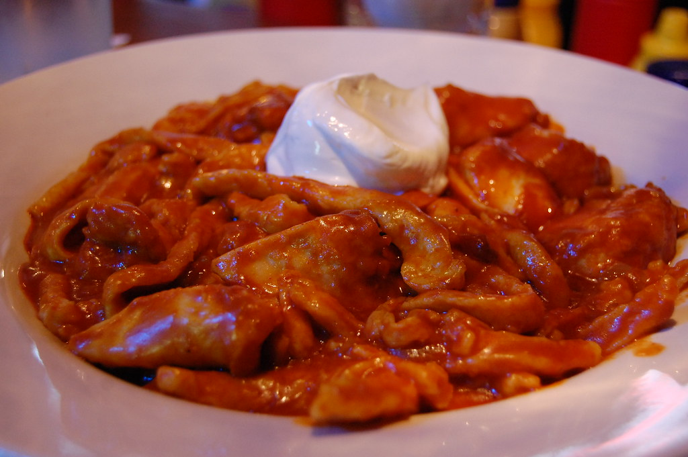

Hearty, savory and easy, chicken paprikash is a wonderful dinner option!
This delightful Hungarian dish is one of my favorite weekday dinners - very easy to make, easy to customize and pairs with so many different sides!
I typically pair this with rice, but if I have time I love making dumplings to go along with it. A side salad or roasted vegetables round out a great meal with this.
Ingredients
Sauce
1/4 cup butter
1 1/2 lb bone-in chicken pieces, with skin
1 medium onion, chopped
1 1/2 cups water
1 tbsp fresh paprika
1 tsp ground black pepper
1/2 tsp salt
1 cup sour cream
2 tbsp all-purpose flour
Dumplings
1/2 cup water
3 large eggs, beaten
2 tsp salt
2 1/2 cups all-purpose flour
Steps
Prepare the dumplings: Fill large pot with water , bring to a boil. Mix water, eggs and salt together in large bowl. Gradually stir in flour to make a stiff batter.
/scoop up a small spoonfull of batter and use another spoon to scrape it into the boiling water. repeat until you have your desired number of dumplings cooking.
Cook until dumplings float to the top of the water (around 10 minutes). Remove with a slottedspoon and drain in a colander. Rinse with warm water and drain again.
Start the sauce: Melt butter in a large skillet over medium-high heat. add chicken and cook until lightly browned (3 to 5 minutes)
Add onion and cook until translucent. Pour in water and season with paprika, pepper and salt. Continue to cook until chicken is no longer pink at the bone and juices run clear (10 - 15 minutes). Remove from the skillet and keep warm.
Stir sour cream and flour together in small bowl. Add to skillet and slowly stir to combine with sauce. Bring to a boil, stirring constantly and cook until thickened (2 - 3 minutes)
Gently stir dumplings into sauce and stir to coat. Cook until heated through (2 or 3 minutes) Plate and enjoy!